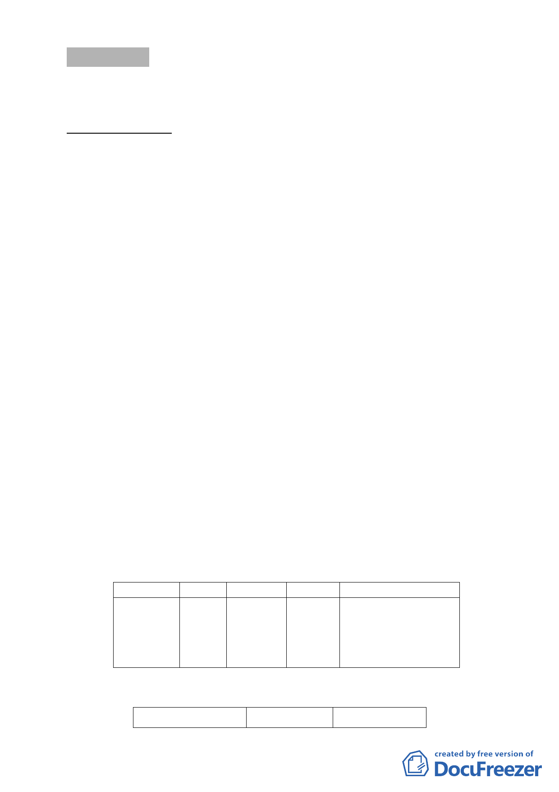

討論事項 三
案名：變更臺北市南港區南港段一小段720 地號等103筆土地第三
種住宅區為第三種住宅區（特）細部計畫案
案情概要說明：
一、 計畫範圍：位於南港路一段以北、興東街以西、新民街以南，
鄰近南港經貿園區及南港捷運站及南港火車站，計畫面積
9,219平方公尺。
二、 計畫緣起與目的：
本計畫區內建物老舊寙陋，於91年10月28日經本府公告
劃定為更新地區，但由於面積廣且區內所有權人數眾多，現
況使用容積高，改建誘因不足，迄今仍無法順利重建。故依
本府100年9月20日公告「修訂臺北市老舊中低層建築社區辦
理都市更新擴大協助專案計畫」，爭取本專案相關容積獎勵。
三、 原都市計畫及土地使用現況
（四） 原都市計畫
本案屬「修訂臺北市南港經貿園區部分住宅區土地使
用分區管制規定案」計畫範圍內，使用分區為第三種住宅
區，建蔽率45％，容積率225％。
（五） 土地使用現況
本計畫區內建物以住宅使用為主，僅沿街一樓有零星
商業使用，區內建築物多為三至五層樓鋼筋混凝土及加強
磚造建築，使用年限多已逾30年；另基地內四樓建築計27
戶，五樓建築計48戶，四五樓建築佔總戶數126 戶近六成
比例。
四、 變更細部計畫內容：
（一）變更土地使用分區
位置 原計畫 新計畫
新民街以 第三種 第三種住
南、興東街 住宅區 宅區(特)
以西、南港
路一段以北
（二）土地使用分區管制
1.使用強度
面積（㎡）
變更理由
9,219 配合「修訂臺北市老舊
中低層建築社區辦理都
市更新擴大協助專案計
畫」，變更原計畫內容。
使用分區
原計畫
新計畫
- 10 -